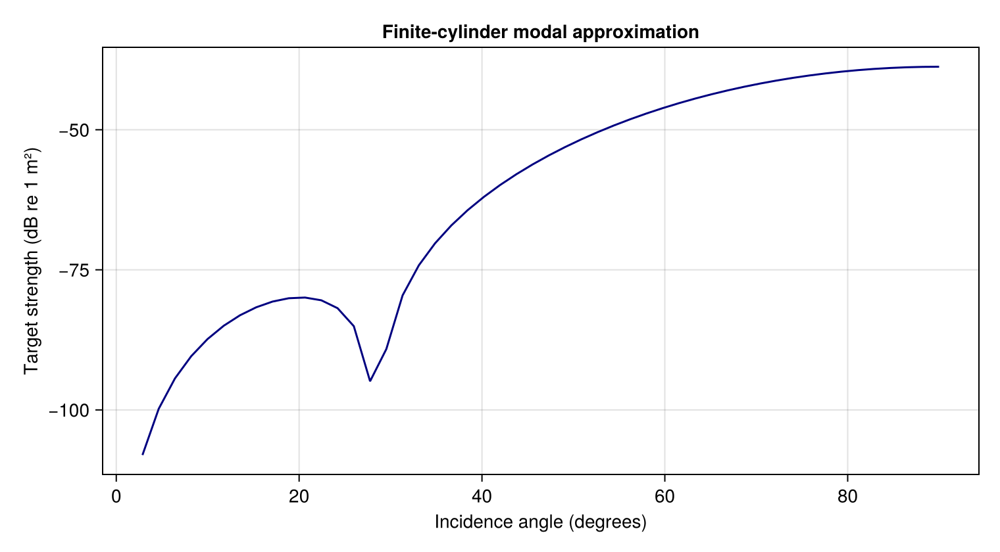

Geometry and incidence
Compare spheroids and cylinders using a consistent incidence convention, then construct a mesh. Body length is along x, width along y, and height/depth along z. Polar incidence is measured from +x, with azimuth from +y toward +z. Broadside at zero azimuth propagates along +y.
Spheroids
using AcousticScattering
wavenumber = 2pi * 12000.0 / 1477.4
prolate = Spheroid(0.02, 0.01)
oblate = Spheroid(0.01, 0.02)
incidence_angles = [0.0, pi / 4, pi / 2]
strengths = [target_strength(modal(body, Rigid(), wavenumber;
incidence_angle = angle, m_max = 6, n_max = 8))
for angle in incidence_angles, body in (prolate, oblate)]
@assert all(isfinite, strengths)
strengths3×2 Matrix{Float64}:
-52.9169 -40.2123
-50.1549 -43.1962
-47.6879 -46.7498Rows correspond to angles, and columns to the prolate and oblate bodies. The first semi-axis follows the symmetry axis. These small orders keep the example inexpensive. Increase both to establish convergence.
Cylinder aspect dependence
using CairoMakie: Figure, Axis, lines!, save
cylinder = Cylinder(0.01, 0.07)
angles = collect(range(0.05, pi / 2; length = 50))
cylinder_strengths = [target_strength(modal(cylinder, Rigid(), wavenumber;
incidence_angle = angle)) for angle in angles]
figure = Figure(; size = (760, 420))
axis = Axis(figure[1, 1]; xlabel = "Incidence angle (degrees)",
ylabel = "Target strength (dB re 1 m²)", title = "Finite-cylinder modal approximation")
lines!(axis, rad2deg.(angles), cylinder_strengths; color = :navy)
save("cylinder_incidence.png", figure)
Zero is end-on and 90 degrees is broadside. This modal implementation neglects cap scattering, so the curve is not an end-on accuracy claim for a closed finite cylinder. endcap_depth affects MFS geometry, not the modal calculation.
Curvature
bent = Cylinder(0.01, 0.07; radius_curvature = 0.14)
bent_modal = modal(bent, Rigid(), wavenumber; incidence_angle = pi / 2)
bent_kirchhoff = kirchhoff(bent, Rigid(), wavenumber; incidence_angle = pi / 2)
@assert isfinite(target_strength(bent_modal))
@assert isfinite(target_strength(bent_kirchhoff))
(modal = target_strength(bent_modal), kirchhoff = target_strength(bent_kirchhoff))(modal = -38.83052121226212, kirchhoff = -38.8015521518822)Modal applies a near-broadside Fresnel correction. Kirchhoff integrates the curved illuminated surface. Their difference includes model error, especially at this modest frequency. mfs(bent, ...) uses a lateral-surface grid with n_s and n_phi controls that omits the ends. For a closed cylinder, use mesh(bent; method=:full, ...) and pass that mesh to bem or mfs. Full BEM includes rigid, pressure-release and fluid/gas interiors. Axisymmetric methods require a straight cylinder.
Full meshes fix the bend in the xy plane. The midpoint is at the origin, its tangent is along +x, and the centerline bends toward +y. Incidence uses polar angle from +x and azimuth from +y toward +z; the geometry does not rotate when these angles change. length is the circular centerline's arc length. Positive endcap_depth adds a half-spheroid at each endpoint, oriented along its tangent; zero gives flat circular ends. See Closed bent-cylinder scattering for oblique and bistatic examples.
Mesh construction
surface_mesh = mesh(prolate; resolution = 32)
@assert surface_mesh isa Mesh
typeof(surface_mesh)AcousticScattering.Mesh{AcousticScattering.MeridianMesh}This is an axisymmetric meridian discretization. resolution means panel count for method = :axisymmetric, but target edge length in meters for method = :full. Supply either resolution or k, not both. Built-in full surface meshing supports spheres, spheroids and cylinders. See the gallery for mesh and surface-field plots.
Supplied closed surfaces
Load a labeled Gmsh mesh and solve on its actual surface:
surface_mesh = mesh("body.msh"; units = :mm, qorder = 4)
solution = bem(surface_mesh, Rigid(), 100.0; incidence_angle = pi / 3)
target_strength(solution; direction = [0.0, 1.0, 0.0])Use FluidFilled(g, h) or GasFilled(g, h) for a homogeneous interior, where g and h are the interior/exterior density and sound-speed ratios. Units are converted to m, where the exterior wavenumber is always in inverse meters. Surface physical tags and names remain available in surface_mesh.body.labels, one vector of tag/name pairs per element. Labels identify surface patches; they do not create additional materials or nested interfaces.
For in-memory geometry, pass a 3 × N coordinate matrix and a connectivity matrix with one triangle per column. Triangle connectivity uses Gmsh ordering with 3, 6 or 10 nodes. For example, this outward-oriented tetrahedron has coordinates in millimeters:
nodes = [0.0 10 0 0; 0 0 10 0; 0 0 0 10]
triangles = [1 1 1 2; 3 2 4 3; 2 4 3 4]
supplied_surface = mesh(nodes, triangles; units = :mm,
labels = [1, 1, 2, 2], provenance = "tetrahedron example")
@assert supplied_surface.body.units == :m
supplied_surface.body.orientation:outwardA generator can also populate a Gmsh model directly, without an intermediate file:
surface_mesh = mesh(; provenance = "elliptically scaled torus") do gmsh
gmsh.model.add("torus")
volume = gmsh.model.occ.addTorus(0, 0, 0, 0.01, 0.0035)
gmsh.model.occ.dilate([(3, volume)], 0, 0, 0, 1.2, 0.8, 1.0)
gmsh.model.occ.synchronize()
gmsh.option.setNumber("Mesh.MeshSizeMax", 0.003)
gmsh.model.mesh.generate(2)
gmsh.model.mesh.setOrder(2)
end
solution = bem(surface_mesh, PressureRelease(), 100.0)The surface must be connected, closed and outward oriented, with matching nodes on shared edges. Nonconvex surfaces and handles are permitted and star-shaped or axial symmetry is not required. The constructor reports open/nonmanifold edges, inconsistent orientation, degenerate triangles and invalid or unresolved curved geometry. It does not repair the geometry. Curved triangles use outward-rounded Bernstein bounds with adaptive subdivision. Acceptance requires positive corner-plane Jacobians, injective elements, and separation away from shared edges or vertices. The bounds apply throughout each element, including between its nodes.
validation=(maxdepth=20, maxwork=200000) controls refinement and work limits, for example mesh("body.msh"; validation=(maxdepth=24,)). An exhausted limit raises a surface validation unresolved error. It never silently accepts an ambiguous intersection. Increasing a limit can resolve conservative bounds, but it does not fix a defective surface. Very strongly curved but valid elements can fail the corner-plane projection requirement and need a finer geometric mesh. Refine geometry and quadrature separately before interpreting fine scattering features. Disconnected and nested surfaces require a multi-region workflow and are rejected by this single-body constructor.
surface_mesh.body retains the coordinates in meters, connectivity, labels, input units, orientation, provenance and validation settings. mesh owns the Gmsh session during import or generation. Finalize any existing session first. See the Gmsh reference manual for triangle ordering and physical groups.
Nested fluid interfaces
Build a separate full-3D mesh for each interface. This two-interface sphere contains a fluid layer and a gas core. All material contrasts refer to the exterior fluid:
outer = mesh(Sphere(1.0); method = :full, resolution = 0.6, mesh_order = 3, qorder = 4)
inner = mesh(Sphere(0.5); method = :full, resolution = 0.3, mesh_order = 3, qorder = 4)
materials = [FluidFilled(1.2, 1.1), GasFilled(0.0012, 0.23)]
coupled = bem([outer, inner], materials, 1.0; incidence_angle = pi / 3)
@assert diagnostics(coupled).relative_residual < 1e-8
(backscatter = target_strength(coupled),
forward = target_strength(coupled; direction = [0.5, sqrt(3) / 2, 0.0]))(backscatter = -8.21206157740532, forward = -5.685601026151884)The default parents=[0,1] places the inner surface in region 1. For a body containing two separate inclusions, pass three meshes and use parents=[0,1,1]. The inner meshes may have independent shapes, offsets and orientations. Generate them with mesh(generate) or supply coordinates/connectivity. They need not be scaled versions of the outer body. Intersecting, touching or incorrectly nested interfaces are rejected.
Inspect diagnostics(coupled).interface_residuals and repeat with smaller element sizes and higher quadrature orders before interpreting resonances or small angular differences. The fields in coupled.data.interfaces retain pressure and normal derivatives on every interface since both derivatives use the normal pointing into the parent region.